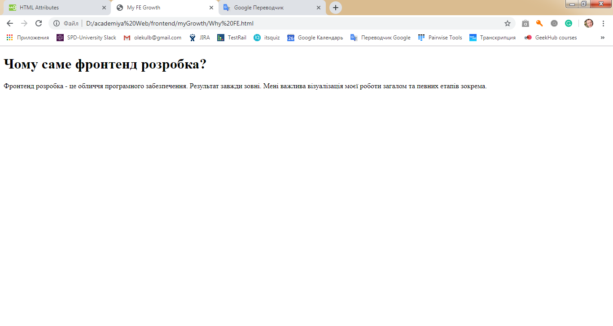

23.06.2019
В цей день я почав свій фронтендовий шлях
28.06.2019
В цей день мені виповнилося 43 роки. Це був чудовий день. А ще це чудовий час розпочати новий етап у своєму житті ;-) Через рік я буду працювати фронтенд розробником в солідній ІТ-компанії.
30.06.2019
В цей день я сформував макет свого сайту-візитівки "Як я став фронтенд розробником" для демонстрації при співбесіді в ІТ-компанію, та розпочав своє навчання на www.w3schools.com. Звичайно розпочав з HTML.
15.07.2019
Мета - вивчення основ верстання сайтів щонайменше 1,5 години на день. Вперед!| № | Мета вивчення | Розшифровка | Опис | Напрямок |
|---|---|---|---|---|
| 1 | HTML | Мова гіпертекстової розмітки | Тіло веб-сторінки | Напрямок - основні теги та їх атрибути |
| 2 | CSS | Каскадні таблиці стилів | Одяг веб-сторінки | Напрямок - основні параметри елементів |
| 3 | Javascript | Javascript, просто Javascript | Розум веб-сторінки | Напрямок - основні функції |
single quotes - ' (одинарні лапки) double qoutes - " (подвійні лапки) coma - , (кома)
period (dot) - . (крапка)
semicolon - ; (крапка з комою)
colon - : (двокрапка)
slesh - / (слеш)
hash - # (хеш)
curly braces - {} (фігурні дужки)
placeholder - текст чи число, що відображається в елементі по замовчуванню
mouse move over - наведення мишки
right-click - клікання правою кнопкою мишки
scroll - прокрутка
scrollbar - полоса прокрутки
tool-tip - вспливаюча підказка
uppercase - верхній регістр
lowercase - нижній регістр
camelcase - змішаний регістр
wide - в ширину
tall - в висоту
alignment - вирівнювання
layout - верстання
drop down list - випадаючий список
nested - вкладений
restriction - обмеження
autocomplete - автозаповнення
shorthand - скорочений запис
increase - збільшувати
decrease - зменшувати
toggle - тумблер, перемикач
stand out - виділяти
overlap - перекривати, заходити одне за одне
must be filled out - має бути обов'язково заповнене
16.07.2019
HTML (HyperText Markup Language)
Техніки верстки (HTML Layout Techniques)
До розділу CSS
До розділу Javascript
Словник термінів
Існує 5 напрямків верстки:
CSS обтікання (CSS float property) - найлегша техніка, але прив'язана до позиціонування документа, що знижує гнучкість
CSS гнучка коробка (CSS flexbox) - передбачуваний результат на різних екранах та пристроях, найбільш прогресивна. Не підтримується ІЕ10 і раніше
CSS решітка (CSS grid) - базується на рішітчатій верстці (стовпчики та колонки), легкий веб-дизайн без обтікання та позиціонування. Не підтримується ІЕ і навіть Edge15
CSS фрейм-ворки (CSS framework) - швидко. Самий популярний Bootstrap, використовує HTML, CSS and jQuery для адаптації сторінки.
таблична (HTML tables) - не рекомендується
Адаптивність (HTML Responsive Web Design)
Сторінка буде виглядати добре на будь якому пристрої
1. Налаштування viewport в тезі meta
meta name="viewport" content="width=device-width, initial-scale=1.0"
2. Адаптоване зображення
Розміщення зображення на повну ширину (100%), але це погано, якщо ширина екрану перевищує ширину зображення
img src="img_girl.jpg" style="width:100%;"
Розміщення зображення на vfrcbvfkmye ширину, але не більше максимальної ширини зображення
img src="img_girl.jpg" style="max-width:100%;height:auto;"
3. Тег picture - різні зображення в залежності від екрану пристрою(описано нижче)
4. адаптація тексту за допомогою vw (viewport width), де 1vw = 1% ширини екрану
h1 style="font-size:10vw">Hello World /h1
5. Медіа запити - коли 3 блоки розміщуються горизонтально на великій ширині та вертикально на маленькій. Приклад тут.
ПРИКЛАД ПОВНОЇ АДАПТАЦІЇ ВЕБ-СТОРІНКИ
html-cемантика
fdhjgkjl,iykfhbkjyu,mghghbfgjngfh
Основні теги та їх атрибути:
Атрибути завжди йдуть в парі ім'я - значення: name="value"
Атрибути тега а (hyperlink):
href - адреса посилання (якщо url не завершити "/", то на сервер буде здійснено два запити, а з "/" один
абсолютний url починається з https://www... , а місцевий (батьківський) без https://www... - рекомендований до застосування
якщо посилання на елемент fileName.html, що знаходиться на тому ж сервері, то href="fileName.html"
якщо посилання на елемент fileName.html, що знаходиться на тому ж сервері в папці html, то href="/html/fileName.html"
якщо посилання на елемент fileName.html, що знаходиться на тому ж сервері в папці на один рівень вище, то href="../fileName.html"
якщо посилання на елемент fileName.html, що знаходиться на іншому сервері в папці html, то href="https://www.../html/fileName.html"
unvisited link - underlined and blue
visited link - underlined and purple
active link - underlined and red
змінити властивості тега а можливо через CSS
target - визначає, де відривається силка
target="_blank" - відривається в новому вікні чи закладці
target="_self" - відривається в тому самому вікні чи закладці (по замовчуванню)
target="_parent" - відривається в батьківській рамці
target="_top" - відкривається на повний розмір екрана
target="назва рамки" - відкривається в заданій рамці
Щоб зробити силку у вигляді картинки, треба тег img обгорнути в тег а.
При цьому в тезі img в атрибут style треба прописати властивість border:0, щоб не відображати рамку навколо малюнка.
title - назва-підказка (tool-tip), що з'являється принаведенні на силку
bookmark - це не атрибут, це закладка текста, а в атрибуті href прописати href="#identificator" - елемент, на який переміститься сторінка, або на закладку іншої сторінки href="localUrl#identificator"
Атрибути тега img:
src - місце знаходження (url) та назва файла зображення, допускається і анімація (gif)
абсолютний url починається з https://www... , а місцевий (батіківський) без https://www... - рекомендований до застосування
якщо посилання на зображення imageName.png, що знаходиться на тому ж сервері, що і html файл, то src="imageName.png"
якщо посилання на зображення imageName.png, що знаходиться на тому ж сервері в папці images, то src="/images/imageName.png"
якщо посилання на зображення imageName.png, що знаходиться на тому ж сервері в папці images на один рівень вище, то src="../images/imageName.png"
якщо посилання на зображення imageName.png, що знаходиться на іншому сервері в папці images, то src="https://www.../images/imageName.png"
style - відображення елемента, з параметрами:
width:"500px" - ширина 500px,
height:"400px" - висота 400px,
float:right або left - обтыкання зправа чи зліва
наприклад style="float:left; width:500px; height:400px; border:0;"
або можна окремо використовувати атрибути:
width="500" - ширина 500px,
height="400" - висота 400px,
Розміри зображення треба обов'язково задавати.
Краще використовувати атрибут style, він коректніше опрацьовується в CSS.
background-image - значення атрибута style - задає задній фон блока, параграфа, заголовка
Наприклад: body style="background-image:url('clouds.jpg');"
alt - опис зображення (якщо зображення з якихось причин не доступне) - обов'язковий атрибут для валідації
Тег picture дозволяє завантажувати те зображення, яке перше в черзі підійде під вимоги екрана
наприклад:
picture
source media="(min-width: 650px)" srcset="img_pink_flowers.jpg" - мінімальний екран 650px
source media="(min-width: 465px)" srcset="img_white_flower.jpg" - мінімальний екран 450px
img src="img_orange_flowers.jpg" alt="Flowers" style="width:auto;" - (обов'язково img) завантажується, якщо браузер не підтримує picture або не підійшло за розмірами
/picture
Тег map дозволяє на зображенні виділяти територію для натискання координатами відносно лівого верхнього кута екрана
Тег area визначає територію для натискання
атрибут тега map: name - ідентифікує map
атрибут тега img: usemap - прив'язує map до зображення
Наприклад:
img src="workplace.jpg" alt="Workplace" usemap="#workmap"
map name="workmap"
area shape="rect" coords="34,44,270,350" alt="Computer" href="computer.htm"
area shape="rect" coords="290,172,333,250" alt="Phone" href="phone.htm"
area shape="circle" coords="337,300,44" alt="Coffee" href="coffee.htm"
/map
Атрибут style - стиль елемента, застосовується з тегами body, a, img, p, h та може визначати наступні стилі:
style="color:red;" - колір текста
style="background-color:powderblue;" - колір заднього фону
style="font-size:60px;" або style="font-size:160%;" - розмір текста
style="font-family:verdana;" - шрифт текста
style="text-align:center;" - вирівнювання текста
style="align:center;" - вирівнювання елементу, наприклад img
style="border:2px solid #FA3657;"
RGB values (червоний, зелений, синій): rgb(255, 0, 0)
HEX values: #ff0000
HSL values (hue - тон, saturation - насиченість, lightness - яркість): hsl(0 та 359 - червоний 120 - зелений 240 - синій, 0% - сірий 100% - повний колір, 0% - чорний 50% - середина 100% - білий) 0, 0%, 0% - чорний 0, 0%, 100% - білий
RGBA values (червоний, зелений, синій, непрозорість): rgba(255, 99, 71, 0.5) - останнє значення alpha (opacity) - непрозорість: від 0.0 прозорий до 1.0 непрозорий
HSLA values (hue, saturation, lightness, alpha): hsla(9, 100%, 64%, 0.5) - останнє значення непрозорість
Атрибути тега html:
lang - декларує мову веб-сторінки (важливо для пошукових двигунів та екранних зчитувачів), наприклад lang="en(мова)-US(діалект)"
Тег head містить метедані, які е відображаються але прописувати його не обов'язково
Атрибути тега head:
title - заголовок сайту в закладці браузера, потрібен для пушукових двигунів: title My FE Growth /title
style - визначає стилі даної сторінки
meta - визначає характеристики сторінки, такі як кодування,ім'я, опис, ключові слова, автора, тощо:
character set - тип кодування: meta charset="UTF-8"
name, content - ім'я та опис: meta name="description" content="Free Web tutorials"
keywords - ключові слова: meta name="keywords" content="HTML, CSS, XML, JavaScript"
author - автор: meta name="author" content="John Doe"
language - декларує мову веб-сторінки (важливо для пошукових двигунів та екранних зчитувачів), наприклад meta name="language" content="Spanish"
оновлення документа кожні 30с: meta http-equiv="refresh" content="30"
viewport - адаптація під розмір екрана: meta name="viewport" content="width=device-width, initial-scale=1.0" (initial-scale - масштаб)
Метадані викристовуються браузером для розуміння відображення сторінки, для пошукових двигінів та інших веб-сервісів
script - визначає клієнтську сторону javascript на сторінці
script - підключення зовнішніх файлів Javascript: script src="js/myscript.js" type="text/javascript" /script
link - підключення зовнішніх файлів та документів
link - підключення зовнішніх файлів CSS: link rel="stylesheet" href="styles.css" type="text/css"
base - визначає базовий URL та базовий target для всіх relative URLs сторінки: base href="https://www.w3schools.com/images/" target="_blank"
Атрибути тегів р (paragraph) та h (heading):
title - назва-підказка (tool-tip), що з'являється принаведенні на параграф або заголовок
style - стиль елемента, наприклад розмір шрифта style="font-size:60px;
Тег b - просто жирний текст (bold)
Тег strong - жирний текст, але в семантиці позначається як важливий текст
Тег i - просто курсив (italic)
Тег em - курсив (emphasized - переклад "виділений"), але в семантиці позначається як важливий текст
Тег mark - текст, що виділений жовтим кольором (marked)
Тег small - зменшення поточного шрифту
Тег del - видалений (перекреслений) текст (deleted)
Тег ins - підкреслений текст(inserted)
Тег sub - тект в нижньому індексі (subscript text)
Тег sup - текст в верхньому індексі (superscript text)
Тег bdo (bi-directional override) - визначає напрямок тексту
має атрибут dir="rtl" (right to left) - з права на ліво, розвертає текст задом на перед
Тег br (line break) - перенос на наступну строчку, атрибутів не має
Тег hr (horizontal rule) - горизонтальна лінія розділу, атрибутів не має
Тег pre - попередньо форматований текст (зберігає всі пробіли та переноси строчки, як в вьорстці та змінює шрифт)
Тег q (short quotation) - бере текст в середині себе в подвійні лапки
Тег blockquote - виділяє секцію тексту з іншого ресурсу
має атрибут cite="https://www.bbb.com" - адреса ресурсу текстової секції
Тег abbr (abbreviation) - визначає абривіатру чи акронім, корисний для пошукових двигунів, перекладачів, браузерів
має атрибут title
Тег address - визначає адресу (контактну інформацію) власника/автора статті/документа
Тег cite - визначає заголовок роботи
Тег table - визначає таблицю
Тег caption - визначає назву(заголовок) таблиці, прописуєть після тега table
Тег tr (table row) - визначає строку таблиці
Тег th (table heading)- визначає ячейки заглавної строчки таблиці (хедер таблиці), містить контент
Тег td (table data)- визначає ячейки кожної строчки таблиці, містить контент. Контентом може бути будь який html елемент - текст, зображення, список, інша таблиця, тощо.
Атрибути тегів table, th, tr:
id - ідентифікатор для задавання особливих властивостей в CSS
style зі значеннями: border, width, height
або окремо атрибути: border, width, height
Атрибут border для тегів table, th, tr треба обов'язково прописувати, інакше табличка буде без рамки за замовчуванням
Атрибут align тега table - визначає положення таблиці на сторінці, може мати значення: center, ....
Атрибут bgcolor тегів td, th, td - задає фоновий колір ячейок таблиці
Тег colgroup - Specifies a group of one or more columns in a table for formatting
Тег col - Specifies column properties for each column within a colgroup element
Тег thead - Groups the header content in a table
Тег tbody - Groups the body content in a table
Тег tfoot - Groups the footer content in a table
Тег ol (ordered list) - визначає впорядкований список (1,2,3...)
Тег ul (unordred list) - визначає невпорядкований список (чорні крапки)
Тег li (list item) - визначає пункти списка ol i ul
Тег dl (description list) - визначає список з описом через будь-який символ (наприклад через дефіс) або без нього, зі здвигом від заголовка
Тег dt (description term(name)) - визначає заголовок списка dl
Тег dd (describe the term in a description list) - визначає пункти списка dl (можливо через дефіс)
Атрибут style тега ul визначає тип маркера та має параметр list-style-type зі значеннями:
disc - чорні крапки (по замовчанню, буде також, якщо інше значення прописано з помилкою)
circle - пусті (білі) крапки
square - чорні квадрати
none - список без маркерів
наприклад:
style="list-style-type:square;"
Атрибут type тега ol визначає тип маркера та має значення:
1 - цифри від 1 (по замовчуванню, буде також, якщо інше значення прописано з помилкою)
A - заглавні букви від А
a - прописні букви від а
I - римські цифри від І
і - маленькі римські цифри від і
наприклад:
ol type="i"
Атрибут start тега ol визначає значення, з якого почнеться відлік
ol start="50" - відлік списка почнеться з 50
Список може бути горизонтальним і цей способ використовують для створення меню навігації.
Для цього використовують CSS властивості float:left або display:inline. Приклад тут:
Тег iframe - дозволяє завантажувати на сторінців рамку з заданими розмірами іншу сторінку за посиланням на неї
Приклад наведено зверху
iframe src="horizontalList.html" width="100%" height="70" /iframe
Має атрибути:
src - url на втавлену сторінку
width та height - ширина та висота рамки в пікселях за замовчуванням (не прописуються) або в %
або те саме з атрибутом style (за допомогою CSS): style="height:200px;width:300px;border:2px solid red; або border:none;"
Якщо тегу iframe задати атрибут name, то сторінку в рамці можна викликати за ім'ям
iframe height="300px" width="100%" src="demo_iframe.htm" name="iframeName"
a href="https://www.w3schools.com" target="iframeName" Силка /a
Тобто при натисканні на "Силка" в полі рамки з ім'ям "iframeName" завантажиться сторінка www.w3schools.com
Тег div - блочно-рівневий елемент (секція документа), який найчастіше використовується, як контейнер
Зазвичай має атрибути: id, class, style
Блочно-рівневий елемент, завжди починається з нової строчки, розтягується на максимально можливу ширину
Перелік всіх блочно-рівневих елементів:
- address
- article
- aside
- blockquote
- canvas
- dd
- div
- dl
- dt
- fieldset
- figcaption
- figure
- footer
- form
- h1-h6
- header
- hr
- li
- main
- nav
- noscript
- ol
- p
- pre
- section
- table
- tfoot
- ul
- video
Тег span - строчний елемент (секція документа), який найчастіше використовується як контейнер для тексту
Зазвичай має атрибути: id, class, style
Строчний (вбудований) елемент, не починається з нової строчки, розтягується наскільки йому необхідно
Перелік всіх строчно (вбудованих) елементів:
- a
- abbr
- acronym
- b
- bdo
- big
- br
- button
- cite
- code
- dfn
- em
- i
- img
- input
- kbd
- label
- map
- object
- output
- q
- samp
- script
- select
- small
- span
- strong
- sub
- sup
- textarea
- time
- tt
- var
Атрибут id - використовується для унікальної ідентифікації любого html-елемента
Значення id може використовуватись в CSS та Javascript для надання певних задач для обраного елемента
Ім'я id чуттєве до регістру букв, повинно мати не менше одного символа та не містити пробілів
В CSS для вибора елемента за id перед його ім'ям в селекторі ставиться символ хеш (#)
Ідентифікатор використовуєтья Javascript для надання певних задач для елементу з унікальним id за допомогою методу getElementsById()
Наприклад зміна тексту в заголовку з id="h1Id" на "Have a nice day!":
document.getElementsById("h1Id").innerHTML = "Have a nice day!";
Атрибут class - використовується для елементів з подібними властивостями стилів (style) та подібними назвами класів
Ім'я класу чуттєве до регістру букв. В CSS перед назвою класу в селекторі ставиться символ крапка (period)
Елемент може використовувати декілька класів, вони пишуться через пробіл
Наприклад тег h2 належить до двох класів, використовує властивості класів city і main:
h2 class="city main"London /h2
Класи використовуютья Javascript для надання певних задач для певних елементів, які відносяться до певного класу,
за допомогою методу getElementsByClassName("className")
Форма
Тег form - визначає форму, яка складається з елементів та використовується для збору введених юзером даних
Сама по собі форма невидима
Атрибути тега форма:
autocomplete - визначає, чи буде увімкнене(on по замовчуванню/off) автозаповнення для форми чи поля вводу text, search, url, tel, email, password, datepickers, range, color
autocomplete запам'ятовує попередні варіанти введення в поле
autocomplete можна вмикати для форми та вимикати для спеціальних полів або навпаки
novalidate - визначає, чи буде валідація даних при сабміті (не працює в ІЕ9 та Safari10)
novalidate прописується або ні
Елементи форми:
Елемент input - самий важливий, залежить від атрибуту type (атрибут type не обов'язковий, по замовчуванню type="text")
Обов'язковий атрибут елемента input - name, без нього при сабміті дані, що введені в поле, не передадуться
Атрибут value елемента input тримає в собі поточне значення поля вводу, може прописатися для визначенн по замовчуванню
input type="text" - однострочне тектове поле (ширина поля по замовчуванню 20 символів)
input type="radio" (radio button) - копка для вибору ТІЛЬКИ одного з варіантів (крапка в колі)
input type="submit" - надсилання введених даних в обробник форми - серверну сторінку зі скриптом для обробки даних
input type="password" - визначає поле пароля
input type="button" - кнопка, яка за допомогою атрибутів (наприклад onclick) може запускати якусь дію.
input type="checkbox" - дозволяє вибрати 0, 1 або декілька варіантів із запропонованих (галочка в квадратику)
input type="color" - призначений для вводу в поле кольору (елемент HTML5, в старих браузерах, IE11 i Safari9.1 може бути прийнято як type="text")
input type="date" - призначений для вводу в поле дати (елемент HTML5, в старих браузерах, IE11 i Safari може бути прийнято як type="text"). Може використовуватись з атрибутами min i max
input type="datetime-local" - призначений для вводу в поле дати та часу за місцевим часовим поясом (елемент HTML5, не підтрибується в Safari, Mozila, IE та буде прийнято як type="text")
input type="email" - використовується для полів, які повинні мати електронну адресу. Деякі браузери проводять валідацію адреси перед відправкою форми (елемент HTML5, в старих браузерах до ІЕ9 може бути прийнято як type="text")
input type="file" - кнопка, призначений для загрузки файлів з дерева "Мій компьютер"
input type="hidden" -
input type="image" -
input type="month" - призначений для вводу в поле місяця та року (елемент HTML5, не підтрибується в Safari, Mozila, IE та буде прийнято як type="text")
input type="number" - визначає поле для вводу цілих чисел (лише цифр), може використовуватись з атрибутами min, max, step (елемент HTML5, в старих браузерах до ІЕ9 включно буде прийнято як type="text")
input type="range" - бігунок у цифровому діапазоні, може використовуватись з атрибутами min, max, step (елемент HTML5, в старих браузерах до ІЕ9 включно буде прийнято як type="text")
input type="reset" - кнопка, яка скине всі введені в форму значення (value) елементів до значень по замовчуванню
input type="search" - визначає поле заданого згідно шаблону пошука (елемент HTML5, в старих браузерах може бути прийнято як type="text")
input type="tel" - поле для вводу номера телефону (елемент HTML5, в старих браузерах може бути прийнято як type="text")
input type="time" - поле для вводу часу (елемент HTML5, в старих браузерах до ІЕ11 та в Safari не підтрибується та може бути прийнято як type="text")
input type="url" - використовується для введення URL адреси. Деякі браузери проводять валідацію URL адреси перед відправкою форми (елемент HTML5, в старих браузерах до ІЕ9 може бути прийнято як type="text")
input type="week" - призначений для вводу в поле тижня та року (елемент HTML5, не підтрибується в Safari, Mozila, IE11 та буде прийнято як type="text")
Елемент label - визначає мітку для елементу input
Елемент textarea - багатострочне тектове поле (ширина поля по замовчуванню 20 символів)
Атрибути rows (строки) і cols(колонки) задають ширину та висоту поля
Або використовуючи атрибут style: textarea name="message" style="width:200px; height:600px;"
Елемент select - випадаючий список
Атрибут size елемента select - визначає кількість видимих значень в списку
Атрибут multiple елемента select - дозволяє вибрати декілька опцій з випадаючого списку, затиснувши кнопку ctrl
Елемент option елемента select - визначає опцію, яка буде вибрана
Має атрибут value - значення даної опції
По замовчуванню у невідкритому списку відображається перший елемент
Але відображати у невідкритому списку можна будь-який елемент, позначивши його selected
Елемент optgroup - визначає групу поріднених опцій в випадаючому списку (як заголовок), обертає в себе елементи option
Елемент button - клікабельна кнопка
Має атрибути:
type="button" - треба обов'язково прописувати, різні браузери мають різні значення по замовченню
onclick="alert('Hello World!')" - визначає дію при натисканні
Елемент datalist - задає список заздалегідь визначених параметрів для однострочного поля вводу (елемент input), використовується в HTML5
Атрибут list елемента input має бути такий самий, як id елемента datalist
Має вигляд:
input list="browsers"
datalist id="browsers"
option value="Internet Explorer"
option value="Firefox"
option value="Chrome"
/datalist
Елемент output - представляє результати обрахувань
Елемент fieldset - використовується для групування зріднених даних у формі, бере свої елементи в загальну рамку з заголовком
Елемент legend - визначає заголовок елемента fieldset
Атрибути форми:
Атрибут name повинно мати кожне поле вводу для сабміта. Дані з поля вводу без атрибута name не відправляються
Атрибут action тега form визначає метод обробки даних форми після сабміта
form action="/action_page.php"
Якщо action не прописаний, то обробка відбуваеться на цій сторінці
Атрибут target тега form визначає сторінку, на якій буде вивдено результати обробки даних форми
target="_self" - в поточному вікні
target="_blank" - в новому вікні
target="_parent" - відривається в батьківському вікні
target="_top" - відкривається на повний розмір екрана
Атрибут method тега form визначає HTTP-method (GET чи POST)
GET (по замовчуванню) - результати обробки даних форми (значення-пара) видно адресній строчці
При цьому довжина URL обмежена - близько 3000 символів
Використовується для незахищеної інформації, не використовується для передачі конфіденційної інформації
Корисно, коли користувач хоче зробити закладку з результатів
POST - використовується для передачі конфіденційної інформації, результати обробки даних форми (значення-пара) не видно адресній строчці
При цьому довжина URL не обмежена, зробити закладку з результатів не можливо
Атрибути, що визначають обмеження в поля вводу:
disabled - визначає, що поле вводу недоступне (не використовується, не натискається, не відправляється при сабміті)
max - визначає максимально допустиме значення в поле вводу
maxlength - визначає максимально допустиму кількість символів для введення в поле
min - визначає мінімально допустиме значення в поле вводу
pattern - визначає відповідність введених даних до regular expression, працює з типами вводу: text, search, url, tel, email, and password
Наприклад введення в поле 3-х літер кода країни: pattern="[A-Za-z]{3}" title="Three letter country code"
readonly - визначає, шо поле вводу лише для зчитування та не може змінюватись
required - (для HTML5) визначає, що поле вводу повинно бути обов'язково заповнене, прописується або ні. Працює з типами вводу: text, search, url, tel, email, password, date pickers, number, checkbox, radio, and file
size - визначає довжину текстового поля кількістю символів, та кількість відображаємих строчок в елементі select
step - визначає цифровий інтервал можливого введення цифр. Прцює з типами вводу: number, range, date, datetime-local, month, time, week
value - визначає поточне значення поля вводу а також значення для поля вводу по замовчуванню
autofocus - визначає, яке поле буде автоматично в фокусі після завантаження сторінки
autofocus прописується або ні
form - елемент input може прописуватись поза межами тега form, але тоді він повинен мати атрибут form
formaction - ???, використовується з type="submit" і type="image"
formenctype - визначає як повинні кодуватись дані форми при сабміті з методом POST (наприклад formenctype="multipart/form-data"), використовується з type="submit" і type="image"
formmethod - визначає метод HTTP для надсилання даних форм на URL для обробки. використовується з type="submit" і type="image"
formnovalidate - перевизначає атрибут novalidate для елемента form. використовується з type="submit"
formtarget - ???, використовується з type="submit" і type="image"
height, width - визначають ширину і висоту зображення (image) в формі в пікселях, наприклад: width="48" height="48"
list - зв'язує елемент input з id елемента datalist
min and max - визначають максимальне і мінімальне значення для елемента input. Працює з типами вводу: number, range, date, datetime-local, month, time and week
multiple - визначає, що можна вибрати декілька елементів в полі ввода. Працює з типамивводу email і file, а також з select
placeholder - вказує в полі ввода підказку, працює з типами вводу: text, search, url, tel, email, password
enctype - визначає кодування відправляємих (самбічених) даних (default: is url-encoded)
accept-charset - визначає кодування форми, що сабмітиться. По замовчуванню кодуванням форми приймається кодування сторінки
Приклад:
form /*action="/action_page.php"*/ target="_blank" method="get" oninput="x.value=parseInt(a.value)+parseInt(b.value)"
0
input type="range" id="a" name="a" value="50"
100 +
input type="number" id="b" name="b" value="50"
=
output name="x" for="a b"
/output
fieldset
legend Personal information: /legend
First name:
input type="text" name="firstname" value="Mickey" maxlength="10"
Last name:
input type="text" name="lastname" value="Mouse"
Password:
input type="password" name="psw"
input type="radio" name="gender" value="male" checked Male
input type="radio" name="gender" value="female" Female
input type="radio" name="gender" value="other" Other
Для чого Вам потрібен автомобіль? Варіанти відповіді:
input type="checkbox" name="var1" value="trips" Подорожі
input type="checkbox" name="var2" value="job" Робота
input type="checkbox" name="var3" value="other" Інше
select name="cars" size="2" multiple
option value="volvo" Volvo /option
option value="saab" Saab /option
option value="fiat" Fiat /option
option value="lanos" selected Lanos /option
option value="audi" Audi /option
/select
Select your favorite color: input type="color" value="#004DFF"
Рік випуску:
від: input type="date" name="nameafter" min="2000-01-01" value="2000-01-01"
до: input type="date" name="namebefor" max="2010-12-31" value="2010-12-31"
Telephone: input type="tel" name="phone" pattern="[0-9]{3}-[0-9]{2}-[0-9]{3}" required
textarea name="message" rows="10" cols="30" ((default)) /textarea
input list="browsers" name="browser"
datalist id="browsers"
option value="Internet Explorer"
option value="Firefox"
option value="Chrome"
option value="Opera"
option value="Safari"
/datalist>button type="button" onclick="alert('Hello Student!')" Click me! /button
input type="file" name="uploadFile"
input type="reset"
input type="submit" value="Submit"
/fieldset
/form
21.07.2019
CSS (Cascading Style Sheets)
CSS описує, як html елементи будуть відображатись
До розділу HTML
До розділу Javascript
Словник термінів
3 способи підключення CSS
External (зовнішній) - підключення через тег link в секції head зовнішнього файлу зі стилями
наприклад:
head
link rel="stylesheet" href="styles.css" (файл css на сервері) type="text/css"
link rel="stylesheet" href="/html/styles.css" (файл css в папці html на сервері) type="text/css"
link rel="stylesheet" href="../styles.css" (файл css в папці на сервері на рівень вище) type="text/css"
link rel="stylesheet" href="https://www.w3schools.com/html/styles.css" (посилання на URL) type="text/css"
/head
Internal (глобальний) - визначає стиль для одної html сторінки шляхом використання атрибуту style в тезі head тільки для даної сторінки
наприклад:
head
style
body {background-color:blue;}
h1 {color:#FFF; background-color:#000; margin-left: 40px;} //Між значенням та одиницями виміру пробіл ніколи не ставиться (40px)
p {color:green;}
/style
/head
Inline (внутрішній) - визначає стиль одного тега використанням атрибуту style безпосередньо в конкретному HTML тезі
наприклад: в тезі h1 style="color:blue;"
Якщо в html документі застосовується декілька стилів для одного елемента, то пріоритет має останній стиль по ходу виконання коду, тож Inline (внутрішній) завжди має перевагу
Пріоритетність наступна:
1. Inline (внутрішній)
2. Internal (глобальний) або External (зовнішній) - залежить від того, хто останнім прописаний в хедері, той і пріоритетніший
3. Стиль браузера по замовчуванню
Синтаксис:
селектор {блок декларації}, де одна декларація зкладається з пари властивість:значення
селектор {властивість:значення; властивість:значення;}
/*коментар*/ - коментар
Селектори CSS та їх атрибути
Селектори. Обирати елемент можна за ім'ям, ідентифікатором, класом, атрибутом, тощо:
назва будь-якого елемента - вибирає всі елементи з заданим ім'ям
# - ідентифікатор, вибирає елемент з заданим ідентифікатором (id не може починатися з цифри)
. - клас, вибирає всі елементи з вказаним класом (клас не може починатися з цифри)
назва елемента.назва класа - вибирає всі елементи з задним ім'ям, що належать до вказаного класу
назва елемента, назва елемента, назва елемента - групування селекторів через кому, всім їм можна задати певні однакові властивості
???? назва атрибута - вибирає елемент з заданим атрибутом
Атрибути вибраних селектором елементів:
Способи визначення кольору описано в розділі HTML в описі атрибуту style
color - колір текста. Рекомендація - якщо задається колір текту, то треба задати оновий колір
background-color - фоновий колір елемента
background-image: url("image.png"); - фонове зображення елемента
background-repeat - повторюємість фонового зображення (по замовчуванню повторюється для покривання всього елемента)
: repeat-x - повторюється лише по горизонталі
: repeat-y - повторюється лише по вертикалі
: no-repeat - не повторюється взагалі
background-position - визначає місце фонового зображення
: right top - правий вехній кут
background-attachment - фіксація фонового зображення
:scroll - буде прокручуватись разом з усією сторінкою (по замовчуванню)
:fixed - буде завжди в одному місці екрана при прокручуванні сторінки
background: #ffffff url("img_tree.png") no-repeat right top; - скороений запис (shorthand) для атрибута background
(background-color)(background-image)(background-repeat)(background-attachment)(background-position) - якщо якась властивість не потрібна, то її просто пропускають
background-clip - визнчає, як фон розміщується в межах елемента
: border-box - фон захвачує весь елемент включно з рамкою
: padding-box - фон захвачує весь елемент безпосередньо до рамки
: content-box - фон захвачує зону контенту (до рамки з відступами)
background-origin - визначає, як фонове зображеня відображаєть в верхньому лівому куту (не працює з background-attachment: fixed)
: border-box - фонове зображеня відображаєть в верхньому лівому куту захвачує частину елементу включно з рамкою
: padding-box - фонове зображеня відображаєть в верхньому лівому куту захвачує частину елементу безпосередньо до рамки
: content-box - фонове зображеня відображаєть в верхньому лівому куту починаючи з краю контенту (до рамки з відступами)
background-size - визначає, який розмір має фонове зображення
: auto - фонове зображеня заповнює простір елементу згідно свого розміру
: ширина висота - фонове зображеня займає задану розмірами зону елемента в пікселях
border: border-width border-style border-color - рамка, короткий запис (shorthand)
Можливо задати для кожної сторони:
border-top/right/bottom/left
border-width - ширина лінії рамки, в рх/pt/cm/em
Одне значення - всі чотири сторони мають однакову товщину лінії
Два значення - верх/низ одне значення, боки друге значення
Три значення - верх/ однакові боки / низ
Чотири значення - верх/право/низ/ліво
thin/medium/thick - тонкий (1px)/середній (3px)/товстий (5px) - стандартні значення
Для кожної сторони можливо задати власне значення
border-top-width / border-right-width / border-bottom-width / border-left-width
border-style - стиль лінії рамки
: dotted - крапки
: dashed - пунктир
: solid - суцільна
: double - подвійна
: groove - вдавлена (рифлена)
: ridge - випукла
: inset - ліво і верх темні
: outset - право і низ темні
: none - немає рамки
: hidden - прихована рамка
: inherit - батьківське значення
: mixed - змішана (верх право низ ліво) або (верх/низ боки)
Для кожної сторони можливо задати власне значення
border-top-style / border-right-style / border-bottom-style / border-left-style
border-color - колір лінії рамки (ім'я кольору/hex/rgb)
Одне значення - всі чотири сторони мають однаковий колір лінії
Два значення через пробіл - верх/низ один колір, боки другий колір
Три значення через пробіл - верх/ однакові боки / низ
Чотири значення через пробіл - верх/право/низ/ліво
Для кожної сторони можливо задати власне значення
border-top-color / border-right-color / border-bottom-color / border-left-color
border-radius - заукруглення кутів рамки, в px/pt/cm/em
margin - відступ від зовнішніх меж (рамки) елемента - відступ зовні
може мати значення:
відстань - в px/pt/cm/em може бути відйємною
% - % від ширини елементу, якому задається відступ
auto - автоматичне горизонтальне центрування (визначається ширина елемента і ширина елемента (контейнеру), в якому він знаходиться; різниця ділиться навпіл - це і буде відступ. визначається браузером)
inherit - значення відступу буде запозичене від батьківського елементу
Одне значення - всі чотири сторони мають однаковий відступ
Два значення через пробіл - верх/низ один відступ, боки другий відступ
Три значення через пробіл - верх/ однакові боки / низ
Чотири значення через пробіл - верх/право/низ/ліво
Для кожної сторони можливо задати власне значення
margin-top / margin-right / margin-bottom / margin-left
Конфлікт відступів: якщо 2 елементи доторкаються один до одоного, то їх margin не плюсується, а встановлюється більший з них
padding - відступ в середині елемента від меж (рамки) до ЧИСТОЇ ШИРИНИ контенту - відступ в середині
може мати значення:
відстань - в px/pt/cm/em - не може бути відйємною
% - % від ширини елементу, який утримує контент
inherit - значення відступу буде запозичене від батьківського елементу
Одне значення - всі чотири сторони мають однаковий відступ
Два значення через пробіл - верх/низ один відступ, боки другий відступ
Три значення через пробіл - верх/ однакові боки / низ
Чотири значення через пробіл - верх/право/низ/ліво
Для кожної сторони можливо задати власне значення
padding-top / padding-right / padding-bottom / padding-left
width - чиста ширина елемента (без padding, border ,margin), при ширині екрана меньше width з'являється горизонтальна полоса прокрутки
може мати значення:
px/pt/cm/em
% - % від ширини елементу, в якому даний елемент розміщений
auto - значення по замовчуванню (визначається браузером)
max-width - зафіксована максимальна чиста ширина елемента (без padding, border ,margin), при ширині екрана меньше max-width горизонтальна полоса прокрутки НЕ з'являється
min-width - зафіксована мінімальна чиста ширина елемента (без padding, border ,margin), при ширині контента в елементі меньше min-width елемент всеодно відображається в заданій ширині
може мати значення:
px/pt/cm/em
% - % від ширини елементу, в якому даний елемент розміщений
none - макс/мін ширина не зафіксована (значення по замовчуванню)
height - чиста висота елемента (без padding, border ,margin), при висоті екрана меньше height з'являється горизонтальна полоса прокрутки
може мати значення:
px/pt/cm/em
% - % від висоти елементу, в якому даний елемент розміщений
auto - значення по замовчуванню (визначається браузером)
max-height - зафіксована максимальна чиста висота елемента (без padding, border ,margin), при висоті екрана меньше max-height горизонтальна полоса прокрутки НЕ з'являється
min-height - зафіксована мінімальна чиста висота елемента (без padding, border ,margin), при висоті контента в елементі меньше min-height елемент всеодно відображається в заданій висоті
може мати значення:
px/pt/cm/em
% - % від висоти елементу, в якому даний елемент розміщений
CSS Box Model - визначає фактичні розміри елемента, це сума: width/height + padding + border + margin
Має вигляд:
box-sizing - фіксує загальну ширину елемента, якщо якась складова збільшується, то ширина контента зменшується
: border-box - розмір фіксує весь елемент включно з рамкою
: padding-box - розмір фіксує весь елемент безпосередньо до рамки
: content-box - розмір фіксує зону контенту (до рамки з відступами)
outline - виділення елемента шляхом формування дотакової рамки зовні існуючої рамки (border) елемента
Головна відмінність outline від border в тому, що outline формує рамку зовні елемента, яка може перекривати контент зп межами елемента
outline не входить до розмірів CSS Box Model (загальних розмірів елементу
outline-style - тип лінії, як і в border: dotted, dashed, solid, double, groove, ridge, inset, outset, none (outline відсутній), hidden
outline-color - колір лінії, як і в border. Якщо задати invert, то outline буде видно незалежно від фонового кольору
outline-width - ширина лінії, як і в border
outline-offset - відстань між межою елементу та outline, задається в px
outline: 5px solid yellow; - як і в border, тип лінії обов'язковий параметр
text-align - вирівнювання тексту по горизонталі, може мати значення:
center - по центру
left - з лівого краю (по замовчуванню для текста з ліва на право)
right - з проавого краю (по замовчуванню для текста з права на ліво)
justified - рівномірне розтягування на всю ширину елементу за допомогою збільшення пробілів
text-decoration - визначає декорацію текту. Не рекомендується підкреслювати текст, якщо це не посилання (не ввести в оману кормстувача)
none - значення, яке використовується для зняття підкреслювання в елемента а (силка)
overline - підкреслювання тексту зверху
line-through - перекреслений текст
underline - підкреслювання тексту знизу
text-transform - зміна регистру текста
uppercase - заголовні букви
lowercase - прописні букви
capitalize - перша буква кожного слова заголовна
text-indent (indentation - відступ) - розмір відступа абзаца (в рх)
letter-spacing - визначає відстань між символами текста в рх (може бути від'ємною, тоді символи находять один на другий)
line-height - визначає відстань між строчками
1 - стандартний розмір
менше 1 (0.9 0.8) - відстань зменшується
більше 1 (1.1 1.2) - відстань зшується
direction - визначає напрямок текста в елементі
Може мати значення "rtl" (right to left) - з права на ліво, тобто рівняє по правому краю
???unicode-bidi - для підтримки багатомовності на одній сторінці, використовується разом з direction
word-spacing визначає відстань між словами в рх (може бути від'ємною, тоді слова можуть находити один на одне)
text-shadow: 3px(горизонтально) 2px(вертикально) red(колір тіні); - задає тінь текста
vertical-align - вертикальне вирівнювання тексту (по замовчуванню не відряізняється від рівня іншого тексту, може мати значення
text-top - по верхньому краю
text-bottom - по нижньому краю
white-space: nowrap; - виставляє текст в одну строчку без переносів
text-overflow - визначає, як переповненний контент буде повідомлятись користовачу
Для того, щоб текст переповнювався, повинні бути задіяні white-space: nowrap; та overflow: hidden;
text-overflow має значення:
clip - (значення по замовчуванню) текст, що вміщується в розміри елемента - відображається, все інше ні
ellipsis - текст, що вміщується в розміри елемента - відображається, все інше замінюється на скорочене "..."
???string - візуалізує текст, який ellipsed
initial - скидання значення на значення по замовчуванню
inherit - внаслідуються батьківські значення
ШРИФТИ
Є загальні групи шрифтів: generic family
Serif - шрифти з крючочками на кутах літер (наприклад шрифт Times New Roman або Georgia)
Sans-serif - шрифти з літерами без крючочками на кутах (наприклад шрифт Arial або Verdana)
Monospace - шрифти, де кожний символ має однакову ширину (наприклад шрифт Courier New або Lucida Console)
font-family - шрифт
Не всі браузери розпізнають всі шрифти, тому спочатку прописується потрібний, потім через кому альтернативні, а в кінці група
Якщо назва шрифта складається з кількох слів, то назва береться в подвійні лапки
Наприклад font-family: "Times New Roman", Times, serif
font-style - стиль шрифта:
normal - звичайний
italic - курсив (нахилений)
oblique - схожий на курсив (нахилений), але менш підтримуваний
font-size - розмір шрифта (текста)
По замовчуванню font-size задається 16px або 1em (16 px = 1 em)
Рекомендується застосування em = px/16, наприклад 30px/16 = 1.875em, 14px/16=0.875em
em використовуються розробниками, якщо користувачу потрібно змінювати розмір шрифта через меню браузера
Рекомендується комбінувати % та em, для body задати {font-size: 100%;}, а потрібний розмір елементів тексту задавати в em
vw (viewport width) - одиниця виміру розміра шрифта, вираховується як ширина екрана в см / 100 (100%) = 1vw (1vw = 1% ширини екрана)
таким чином розмір текста на екрані відповідатиме розміру екрана
font-weight - виділиний шрифт: звичайний (normal), жирний (bold)
font-variant - шрифт стає заглавними літерами, але розмір літер як у прописних: звичайний (normal), заглавними маленькими літерами (small-caps)
font короткий запис:
font: font-style font-variant font-weight font-size(обов'язково)/line-height font-family(обов'язково);
наприклад: font: 15px arial, sans-serif;
або: font: italic bold 12px/30px Georgia, serif;
Селектори table, th, td:
Атрибути для селекторів table, th, td:
border: 1px solid black - визначає рамку
border-collapse: collapse - робить рамку одною лінією
padding: 15px - для th, td - внутрішній відступ
text-align: left - для th - вирівнювання по лівому краю
border-spacing: 5px; - для table - визначає відстань між ячейками (не застосовується разом з border-collapse)
colspan="2" (colomn span) - об'єднує горизонтальні ячейки th або td, в даному випадку 2 в 1
rowspan="2" (row span) - об'єднує вертикальні ячейки th або td, в даному випадку 2 в 1
table#t01 tr:nth-child(even) {background-color: #eee;} - виборка строчок через одну для заливки заднього фону сірим/білим
table#t01 tr:nth-child(odd) {background-color: #fff;} - виборка строчок через одну для заливки заднього фону сірим/білим
Елементи можуть бути позиціоновані: top, bottom, left, right, але для цього їм потрібно задати position
position - визначає позиціонування елемента
Значення top, bottom, left, right при позиціонуванні задаються в рх
position може мати значення:
static - статично (по замовчуванню), позиціонує елемент відповідно нормального потоку сторінки і ніяк інакше, на static-елементи не впливають top, bottom, left, right
relative - відносно, позиціонує елемент відносно його нормального значення
при цьому звільнене позиціонуванням місце не заповнюється іншим контентом
fixed - фіксовано, елемент позиціонується в одному місці екрана незалежно від полоси прокрутки
не залишає при собі зазорів для іншого контенту
absolute - абсолютно, елемент позиціонується фіксовано відносно його найблищого батьківського елемента, що також має позиціонування
якщо абсолютно позиціонований елемент не знаходить позиціонованих предків (любе позиціонуваня крім static), то він позиціонується відносно блоку body та прокручується разом з усією сторінкою
за допомогою властивості clip для абсолютно позиціонованого елемента можливо задати його межі (clip не працює з елементами, що мають overflow: visible;)
це координати відносно лівого верхнього кута елемента, відносно якого позиціонується
clip: rect (top, right, bottom, left); наприклад clip: rect(0px,60px,200px,0px);
sticky - приклеєно, елемент позиціонується відносно полоси прокрутки юзера та може переключатися між значеннями relative і absolute
Поки полоса прокрутки не змінила позицію елемента sticky має властивості relative, які тільки полоса прокрутки хоч трохи змінює позицію елемента sticky -він отримує властивості fixed
Щоб позиціонування sticky працювало, необхідно задати хоча б одне зі значень top, bottom, left, right
Позиціонування sticky не підтримується в Internet Explorer, Edge 15, а Safari вимагає застосування -webkit- prefix (приклад position: -webkit-sticky;)
initial - по замовчуванню
inherit - значення батьківського елемента
Елемент вважається позиціонованим якщо має будь-яке значення position крім static
Позиціоновані елементи можуть перекривати, накладатися на інші елементи
z-index - визначає порядок накладання елементів (який елемент зверху, а який знизу при перекриванні)
z-index може бути позитивним і негативним, в якого елемента вище значення той і зверху
Якщо два елемента, що не мають z-index накладаються, то зверху буде той елемент, що по html структурі позиціонується останнім
Щоб позиціонувати текст на зображенні, зображення вкладають до одного блоку div з позиціонуванням relative, а текст до іншого блоку div з позиціонуванням absolute
По центру:
position: absolute;
left: 0;
top: 50%;
width: 100%;
text-align: center;
Зліва зверху:
position: absolute;
top: 8px;
left: 16px;
Зправа зверху:
position: absolute;
top: 8px;
right: 16px;
Зліва знизу:
position: absolute;
bottom: 8px;
left: 16px;
Зправа знизу:
position: absolute;
bottom: 8px;
right: 16px;
float - визначає спосіб обтікання елементу контентом
left - елемент з лівого краю, контент справа
right - елемент з правого краю, контент зліва
none - елемент не обтікається (по замовчуванню). Наприклад зображення зліва, а збоку нього лише перша строчка контенту, все інше йде під низ зображення
inherit - батьківські властивості
clear - очищує попередні плаваючі елементи з заданої сторони
Найчастіше використовується після застосування float
none - дозволяє обтікання елементом плаваючих елементів з обох боків (по замовчуванню)
left - очищує елемент від плаваючого елемента з лівої сторони
right - очищує елемент від плаваючого елемента з правої сторони
both - очищує елемент від плаваючого елемента з обох боків
inherit - батьківські властивості
сlearfix застосовується, якщо плаваючий елемент вищий за елемент, в якому він розміщений
для цього використовують oveflow: auto; - контейнер збілшується до висоти плаваючого елемента, щоб не було переповнення
Lists display width and max-width Overflow Links Icons
30.07.2019
Javascript - динаміка та інтерактивність сторінки (робота з зображеннями, перевірка форми та динамічні зміни контенту)
До розділу HTML
До розділу CSS
Словник термінів
Тег script дозволяє ідентифікувати скрипт клієнтської сторони або точки підключення до зовнішніх файлів за допомогою атрибуту src
Для вибору html-елементів Javaіcript начастіше використовує метод document.getElementById()
Основні можливості Javascript:
Зміна html-контенту:
document.getElementById("demo").innerHTML = "Hello JavaScript!";
Зміна html-стилів:
document.getElementById("demo").style.fontSize = "25px";
document.getElementById("demo").style.color = "red";
document.getElementById("demo").style.backgroundColor = "yellow";
Зміна html-атрибутів:
document.getElementById("image").src = "picture.gif";
Якщо скрипти клієнтської сторони не підтримаються браузером, то за допомогою noscript можна про це повідомити:
Тег noscript видає альтернативне повідомлення
noscript Sorry, your browser does not support JavaScript! /noscript
17.08.2019
Олімпійські кільця за допомогою CSS
Європа
Африка
Америка
Азія
Австралія
18.08.2019
Текст в кільці
Україна
07.09.2019
Сьогодні пройшов тестування на курс з Javascript від Lectorium. Дуже сподобалась атмосфера. Все було чудово сплановано, приємно здивувала тепла, затишна атмосфера. З нетерпінням очікую на результати.
10.09.2019
Приклад створення горизонтального меню навігації за допомогою списка та властивості float: left
Приклад розмітки сторінки за допомогою float, clear та вертикального списку для side bar
14.09.2019
Рішення практичного завдання з html в SPD-University за допомогою div-ів. Нажаль при тестуванні зробив неправильно, а дома, обдумавши завдання в маршрутці, виконав за 15 хвилин.
22.09.2019
Рішення практичного завдання з html в SPD-University за допомогою таблиці так, як було задумано на тестуванні